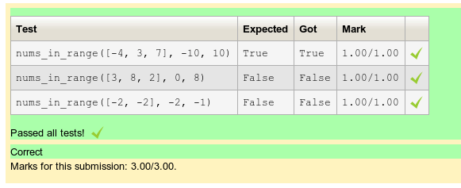
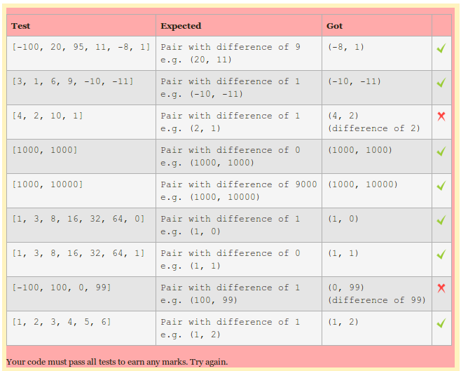

Version: 2.0 beta April 2014
Author: Richard Lobb, University of Canterbury, New Zealand.
CodeRunner is a Moodle question type that requests students to submit program code to some given specification, e.g. a Python function sqr(x) that returns its parameter squared. The submission is graded by running a series of testcases of the code in a sandbox, comparing the output with the expected output. CodeRunner is intended to be run in an adaptive mode, so that students know immediately if their code is passing the tests. In the typical 'all-or-nothing' mode, all test cases must pass if the submission is to be awarded any marks. The mark for a set of questions in a quiz is then determined primarily by which questions the student is able to solve successfully and then secondarily by how many submissions the student makes on each question. However, it is also possible to run CodeRunner questions in a traditional quiz mode where the mark is determined by how many of the test cases the code successfully passes.
CodeRunner and its predecessors pycode and ccode has been in use at the University of Canterbury for about four years, running tens of thousands of student quiz submissions in Python, C and Matlab. All laboratory and assignment work in the introductory first year Python programming course, which has around 400 students in the first semester and 200 in the second, is assessed using CodeRunner questions. The mid-semester test also uses Moodle/CodeRunner and it is intended to run the final examination on Moodle/Coderunner in the near future. The second year C course of around 200 students makes similar use of Coderunner using C questions and a third year Civil Engineering course, taught in Matlab, also uses Coderunner for all labs and for the mid-semester programming exam.
The system currently supports Python2 (considered obsolescent), Python3, C, Octave and Matlab. Java support is also present but has not yet been used in courses. The architecture allows easy extension to other languages and one lecturer has made intermittent use of clojure questions.
For security and load reasons, CodeRunner in its present form is not suitable for installing on an institution-wide Moodle server. Instead, it is recommended that a special quiz server be set up: essentially just a standard Linux install plus Moodle, CodeRunner and any extra languages required (e.g. Python3, Java). A single 4-core server can handle an average quiz question submission rate of about 30 quiz questions per minute while maintaining a response time of less than about 3 - 4 seconds, assuming the student code itself runs in a fraction of a second.
Administrator privileges and some Unix skills are needed to install Coderunner.
CodeRunner version 2 is a major upgrade from version 1, with many new features and significant restructuring of the database tables. Although the new version attempts to update all the database tables to the new format the process has been tested on only one system. Some problems occurred and the upgrade code was edited to deal with those problems but the edits have received minimal testing because of the absence of any "pure" version 1 system on which to test them. If you are currently running version 1 and wish to upgrade to version 2, it is strongly recommended that:
You do not attempt such an upgrade during term time.
You make a complete backup of your existing server's database before attempting the upgrade.
You export all your coderunner questions from the question database in Moodle XML format.
Also, please feel free to contact the developer (richard.lobb@canterbury.ac.nz) either to discuss your upgrade beforehand or afterwards if any problems occur.
With all those caveats, upgrading from an earlier version should be as simple
as a raw installation; the upgrade.php script should modify all the database
tables and preserve all existing questions and student submissions. Move the
existing
CodeRunner requires Moodle version 2.5 or later.
There are three stages to installation:
Installing the CodeRunner module itself.
Installing the Liu sandbox if you're planning on running C on the Moodle server (not strictly necessary but recommended) to provide more security than Runguard or much better performance than Ideone.
Configuring the system for the particular sandbox(es) and languages your installation supports.
CodeRunner should be installed in the <moodlehome>/local directory as follows.
cd <moodlehome>/local
git clone https://github.com/trampgeek/CodeRunner.git
cd CodeRunner
sudo ./install
The install script sets up symbolic links from the question/type and
question/behaviour directories to corresponding CodeRunner directories; you
must have configured the webserver to follow symbolic links for this to work.
It also creates a new user called coderunner on the system; when using
the RunguardSandbox (see below), tests are run with the user ID set
to the coderunner user to minimise the exposure of sensitive web-server
information. The install script may prompt for details like the office and phone
number of the coderunner user -- just hit enter to accept the defaults.
The switch to the coderunner user and the controlled execution of the
submitted program in RunguardSandbox is done by a program runguard, written
by Jaap Eldering as part of
the programming contest server DOMJudge. This
program needs to be 'setuid root', and hence the install script requires
root permissions to set this up.
All going well, you should finish up with a user 'coderunner', albeit one without
a home directory, and symbolic links from within the <moodlehome>/question/type
and <moodlehome>/question/behaviour directories to the <moodlehome>/local/CodeRunner/CodeRunner
and <moodlehome>/local/CodeRunner/adaptive_adapted_for_coderunner directories
respectively. There should also be a symbolic link from local/Twig to
local/CodeRunner/Twig. These can all be set up by hand if desired but read the
install script to see exactly what was expected.
This step can be skipped if you're not planning on running C, or if you're happy to use the default Runguard Sandbox for C programs.
The recommended sandbox for running C is the Liu sandbox. It can be obtained from here. Both the binary and the Python2 interface need to be installed. Note that CodeRunner does not currently work with the Python3 interface to the sandbox.
The easiest way to install the Liu sandbox is by
downloading appropriate .debs or .rpms of both libsandbox and pysandbox (for
Python version 2). Note that the pysandbox download must be the one appropriate
to the installed version of Python2 (currently typically 2.6 on RHEL systems
or 2.7 on most other flavours of Linux) regardless of whether or not you
intend to support Python3 as a programming language for submissions.
The last step in installation involves configuring the sandboxes appropriately for your particular environment. You can set which sandboxes you wish to use, and other sandbox parameters, via the Moodle administrator settings for the CodeRunner plugin, accessed via Site administration > Plugins > Plugins overview.
By default, only the RunguardSandbox is enabled. If you have installed the LiuSandbox as described above, you will need to enable it and configure the username and password via the administrator settings. You can also enable the use of the Ideone compute server and configure the username and password for it, via the administrator settings. Some notes on the different sandbox options follow.
The RunguardSandbox. This can be used to run all the supported languages locally on the Moodle server itself. Assuming the install script successfully created the user coderunner and set the runguard program to run as root, the RunguardSandbox is reasonably safe, in that it controls memory usage and execution time and limits file access to those parts of the file system visible to all users. However, it does not prevent use of system calls like socket that might open connections to other servers behind your firewall and of course it depends on the Unix server being securely set up in the first place. There are also potential problems with controlling fork bombs and/or testing of heavily multithreaded languages or student submissions. That being said, our own quiz server has been making extensive use of the RunguardSandbox for two years and only once had a problem when multiple Python submissions attempted to run the Java Virtual Machine (heavily multithreaded), for which the process limit previously set for Python was inadequate. That limit has since been multiplied by 10.
The IdeoneSandbox. ideone.com is a compute server that runs programs submitted either through a browser or through a web-services API in a huge number of different languages. It is not recommended for production use, as execution turn-around time is frequently too large (from 10 seconds to a minute or more) to give a tolerable user experience. An Ideone account (username and password) is required to access the Ideone web-services. Runs are free up to a certain number but you then have to pay for usage. The IdeoneSandbox is there mainly as a proof of concept of the idea of off-line execution and to support occasional use of unusual languages.
If you are using the LiuSandbox for running C questions, the C compiler must must be installed, with the capability to compile and link statically (no longer part of the default RedHat installation).
The default Moodle install has all files in the
A better fix is to set the group of the entire Moodle subtree to apache (or www-data depending on what user the web server runs as) and then make it all not world readable. However, if you do that after installing CodeRunner you'll break the set-uid-root program that's used to start the Runguard sandbox. So you then need to re-run the CodeRunner installer to fix it.
If your Moodle installation includes the phpunit system for testing Moodle modules, you might wish to test the CodeRunner installation. Most tests require that at least python2 and python3 are installed.
You should then be able to run the tests with
cd <moodlehome>
sudo php admin/tool/phpunit/cli/init.php
sudo ./phpunit --testsuite="qtype_coderunner test suite"
You will almost certainly get a number of errors relating to the various sandboxes and languages that you have not installed, e.g. the LiuSandbox, Matlab, Octave and Java. These can all be ignored unless you plan to use those capabilities. The name of the failing tests should be sufficient to tell you if you need be at all worried.
Please email me if you have problems with the installation.
CodeRunner support a wide variety of question types and can easily be extended to support others. A CodeRunner question type is defined by a question prototype, which specifies run time parameters like the execution language and sandbox and defines how a test program is built from the question's test-cases plus the student's submission. The prototype also defines whether the correctness of the student's submission is assessed by use of an EqualityGrader or a RegexGrader. The former expects the output from the test execution to exactly match the expected output for the testcase, while the latter expects a regular expression match instead. The EqualityGrader is recommended for all normal use as it encourages students to get their output exactly correct; they should be able to resubmit almost-right answers for a small penalty, which is generally a better approach than trying to award part marks based on regular expression matches.
Test cases are defined by the question author to check the student's code. Each test case defines a fragment of test code, the standard input to be used when the test program is run and the expected output from that run. The author can also add additional files to the execution environment.
The test program is constructed from the test case information plus the student's submission using one of two templates defined by the prototype. The per-test template defines a different program for each test case. To achieve higher efficiency with most question types there is also a combinator template that defines a single program containing all the different tests. If this template is defined, and there is no standard input supplied, CodeRunner tries to use it first, but falls back to running the separate per-test-case programs if any runtime exceptions occur. Templates are discussed in more detail below.
The C-function question type expects students to submit a C function, plus possible additional support functions, to some specification. For example, the question might ask "Write a C function with signature int sqr(int n) that returns the square of its parameter n". The author will then provide some test cases of the form
printf("%d\n", sqr(-11));
and give the expected output from this test. There is no standard input for this question type. The per-test template would then wrap the student's submission and the test code into a single program like:
#include <stdio.h>
// --- Student's answer is inserted here ----
int main()
{
printf("%d\n", sqr(-11));
return 0;
}
which would be compiled and run. The output from the run would be compared with the specified expected output (121) and the student would be marked right or wrong accordingly.
This example ignores the use of the combinator template, which in the case of the built-in C function question type would build a program with multiple printf calls interleaved with printing of a special separator. The resulting output would then be split back into individual test case results using the separator string as a splitter.
The file db/upgrade.php installs the following set of prototype
question types into the data base. However, question authors should not feel
constrained by this built-in set. Specific instances of each question type
can be customised in various ways, typically to use a different template and
in fact authors can define their own question types.
The issues of question customisation and user-defined question types
are discussed in later sections.
c_function. This is the question type discussed in the above example. The student supplies just a function (plus possible support functions) and each test is (typically) of the form
printf(format_string, func(arg1, arg2, ..))
The template for this question type generates some standard includes, followed by the student code followed by a main function that executes the tests one by one.
The manner in which a C program is executed is not part of the question type definition: it is defined by the particular sandbox to which the execution is passed. The Liu Sandbox and the CodeRunner sandbox both use the gcc compiler with the language set to accept C99 and with both -Wall and -Werror options set on the command line to issue all warnings and reject the code if there are any warnings. C++ isn't built in at present, as we don't teach it, but changing the sandboxes to support C++ is mainly just a matter of changing the compile command line, viz., the line "$cmd = ..." in the compile methods of the C_Task classes in runguardsandboxtasks.php and liusandboxtasks.php. You would then probably wish to change the C question type templates a bit, e.g. to include iostream instead of, or as well as, stdio.h by default. The line
using namespace std;
may also be desirable.
c_program. Used for C write-a-program questions where the student supplies a complete program and the tests simply run this program with the supplied standard input.
python3. Used for most Python3 questions. For each test case, the student code is run first, followed by the test code.
python2. Used for most Python2 questions. As for python3, the student code is run first, e followed by the sequence of tests. This question type should be considered to be obsolescent due to the widespread move to Python3 through the education community.
java_method. This is intended for early Java teaching where students are still learning to write individual methods. The student code is a single method, plus possible support methods, that is wrapped in a class together with a static main method containing the supplied tests (which will generally call the student's method and print the results).
java_class. Here the student writes an entire class (or possibly multiple classes), which (currently) must not be public. The test cases are then wrapped in the main method for a separate public test class which is added to the students class and the whole is then executed. If you wish students to instead submit public classes, you must change the template to strip the word public from the start of their class definition using the text-substitution capabilities of the template processor Twig. [Students can construct programs that will not be correctly processed by simplistic substitutions of this sort, but then they just fail the tests. They soon learn to write their classes in the expected manner!]
java_program. Here the student writes a complete program which is compiled then executed once for each test case to see if it generates the expected output for that test.
As discussed below, this base set of question types can be customised in various ways.
The current version of CodeRunner installs some other more specialised question types, but these are likely to be dropped from the main install in the near future, since it is now straightforward for authors to define their own question types.
Local question types include:
python3_pylint_func. This is a special type developed for use in the University of Canterbury. The student submission is prefixed by a dummy module docstring and the code is passed through the pylint source code analyser. The submission is rejected if pylint gives any errors, otherwise testing proceeds as normal. Obviously, pylint needs to be installed and appropriately configured for this question type to be usable. It uses the RunguardSandbox.
python3_pylint_prog. This is identical to the previous type except that no dummy docstring is added at the top as the submission is expected to be a stand-alone program.python
c_full_main_tests. This is a rarely used special question type where students write global declarations (types, functions etc) and each test is a complete C main function that uses the student-supplied declarations.
matlab_function. This is the only supported matlab question type and isn't really intended for general use outside the University of Canterbury. It assumes matlab is installed on the server and can be run with the shell command "/usr/local/bin/matlab_exec_cli". A ".m" test file is built that contains a main test function, which executes all the supplied test cases, followed by the student code which must be in the form of one or more function declarations. That .m file is executed by Matlab, various Matlab-generated noise is filtered, and the output must match that specified for the test cases.
octave_function. This uses the open-source Octave system to process matlab-like student submissions. It has not yet been used for teaching so should be regarded as experimental.
Templates are the key to understanding how a submission is tested. There are in general two templates per question type - a combinator_template and a per_test_template but we'll ignore the former for now and focus on the latter.
The per_test_template for each question type defines how a program is built from the student's code and one particular testcase. That program is compiled (if necessary) and run with the standard input defined in that testcase, and the output must then match the expected output for the testcase (where 'match' is defined by the chosen validator: either an exact match or a regular-expression match.
The question type template is processed by the Twig template engine. The engine is given both the template and a variable called STUDENT_ANSWER, which is the text that the student entered into the answer box, plus another called TEST, which is a record containing the test-case that the question author has specified for the particular test. The template will typically use just the TEST.testcode field, which is the "test" field of the testcase, and usually (but not always) is a bit of code to be run to test the student's answer. As an example, the question type c_function, which asks students to write a C function, has the following template:
#include <stdio.h>
#include <stdlib.h>
#include <ctype.h>
{{ STUDENT_ANSWER }}
int main() {
{{ TEST.testcode }};
return 0;
}
A typical test (i.e. TEST.testcode) for a question asking students to write a
function that
returns the square of its parameter might be:
printf("%d\n", sqr(-9))
with the expected output of 81. The result of substituting both the student code and the test code into the template would then be a program like:
#include <stdio.h>
#include <stdlib.h>
#include <ctype.h>
int sqr(int n) {
return n * n;
}
int main() {
printf("%d\n", sqr(-9));
return 0;
}
When authoring a question you can inspect the template for your chosen question type by temporarily checking the 'Customise' checkbox. Additionally, if you check the Template debugging checkbox you will get to see in the output web page each of the complete programs that gets run during a question submission.
As mentioned earlier, there are actually two templates for each question
type. For efficiency, CodeRunner first tries
to combine all testcases into a single compile-and-execute run using the second
template, called the combinator_template. There is a combinator
template for most
question types, except for questions that require students
to write a whole program. However, the combinator template is not used during
testing if standard input is supplied for any of the tests; each test
is then assumed to be independent of the others, with its own input. Also,
if an exception occurs at runtime when a combinator template is being used,
the tester retries all test cases individually using the per-test-case
template so that the student gets presented with all results up to the point
at which the exception occurred.
As mentioned above, both the per_test_template and the combinator_template
can be edited by the question
author for special needs, e.g. if you wish to provide skeleton code to the
students. As a simple example, if you wanted students to provide the missing
line in a C function that returns the square of its parameter, and you
also wished to hide the printf from the students, you could use
a template like:
#include <stdio.h>
#include <stdlib.h>
#include <ctype.h>
int sqr(int n) {
{{ STUDENT_ANSWER }}
}
int main() {
printf({{ TEST.testcode }});
return 0;
}
The testcode would then just be of the form sqr(-11), and the question text would need to make it clear to students what context their code appears in. The authoring interface allows the author to set the size of the student's answer box, and in a case like the above you'd typically set it to just one or two lines in height and perhaps 30 columns in width.
When you edit the per-test template, the combinator template is immediately disabled. You can re-enable and edit it, if you wish, by opening the Advanced Customisation block.
You will need to understand loops and selection in the Twig template engine if you wish to write your own combinator templates. For one-off question use, the combinator template doesn't normally offer sufficient additional benefit to warrant the complexity increase unless you have a large number of testcases or are using a slow-to-launch language like Matlab. However, if you are writing your own question types you might wish to make use of it.
It may not be obvious from the above that the template mechanism allows for almost any sort of question where the answer can be evaluated by a computer. In all the examples given so far, the student's code is executed as part of the test process but in fact there's no need for this to happen. The student's answer can be treated as data by the template code, which can then execute various tests on that data to determine its correctness. The Python pylint question types given earlier are a simple example: the template code first writes the student's code to a file and runs pylint over that file before proceeding with any tests. The per-test template for this question type (which must run in the RunguardSandbox) is:
__student_answer__ = """{{ STUDENT_ANSWER | e('py') }}"""
import subprocess
def check_code(s):
try:
source = open('source.py', 'w')
source.write(s)
source.close()
result = subprocess.check_output(['pylint', 'source.py'], stderr=subprocess.STDOUT)
except Exception as e:
result = e.output.decode('utf-8')
if result.strip():
print("pylint doesn't approve of your program")
print(result)
raise Exception("Submission rejected")
check_code(__student_answer__)
{{ STUDENT_ANSWER }}
{{ TEST.testcode }}
The Twig syntax {{ STUDENT_ANSWER | e('py') }} results in the student's submission being filtered by a Python escape function that escapes all all double quote and backslash characters with an added backslash. Note that in the event of a failure an exception is raised; this ensures that further testing is aborted so that the student doesn't receive the same error for every test case. [As noted above, the tester aborts the testing sequence when using the per-test-case template if an exception occurs.]
Some other more complex examples that we've used in practice include:
A Matlab question in which the template code (also Matlab) breaks down the student's code into functions, checking the length of each to make sure it's not too long, before proceeding with marking.
A Python question where the student's code is actually a compiler for a simple language. The template code runs the student's compiler, passes its output through an assembler that generates a JVM class file, then runs that class with the JVM to check its correctness.
A Python question where the students submission isn't code at all, but is a textual description of a Finite State Automaton for a given transition diagram; the template code evaluates the correctness of the supplied automaton.
Using just the template mechanism described above it is possible to write almost arbitrarily complex questions. Grading of student submissions can, however, be problematic in some situations. For example, you may need to ask a question where many different answers are possible, and the correctness can only be assessed by a special testing program. Or you may wish to subject a student's code to a very large number of tests and award a mark according to how many of the test cases it can handle. The usual exact-match grader cannot handle these situations. For such cases the "template does grading" checkbox can be used.
When the 'template does grading' checkbox is checked the output from the run is not passed to the grader but is taken as the grading result. The output from the template-generated program must now be a JSON-encoded object (such as a dictionary, in Python) containing at least a 'fraction' field, which is multiplied by TEST.mark to decide how many marks the test case is awarded. It should usually also contain a 'got' field, which is the value displayed in the 'Got' column of the results table. The other columns of the results table (testcode, stdin, expected) can also be defined by the custom grader and will be used instead of the values from the testcase. As an example, if the output of the program is the string
{"fraction":0.5, "got": "Half the answers were right!"}
half marks would be given for that particular test case and the 'Got' column would display the text "Half the answers were right!".
Writing a grading template that executes the student's code is, however, rather difficult as the generated program needs to be robust against errors in the submitted code.
As an example of the use of a custom grader, consider the following question:
"What single line of code can be inserted into the underlined blank space in the code below to make the function behave as specified? Your answer should be just the missing line of code, not the whole function. It doesn't matter if you indent your code or not in the answer box. For full marks your answer must be a single line of code. However, half marks will be awarded if you provide more than one line of code but it works correctly.
def nums_in_range(nums, lo, hi):
'''Given a non-empty list of numbers nums and two numbers
lo and hi return True if and only if the minimum of the
numbers in nums is greater than lo and the maximum of
the numbers in nums is less than hi.'''
____________________________
The grader for this question, which needs to check both the number of lines of code submitted and the correctness, awarding marks and appropriate feedback accordingly, might be the following:
import re
__student_answer__ = """{{ STUDENT_ANSWER | e('py') }}"""
if __student_answer__.strip().startswith('def'):
raise Exception("You seem to have pasted the whole function " +
"definition. READ THE INSTRUCTIONS!")
if re.search(r'print *\(.*\)', __student_answer__):
mark = 0
got = "BAD CODE: your function should not print anything"
else:
# Split the code into lines. Indent if necessary.
__lines__ = __student_answer__.split('\n')
__lines__ = [' ' + line +
'\n' for line in __lines__ if line.strip() != '']
code = 'def nums_in_range(nums, lo, hi):\n' + ''.join(__lines__)
exec(code)
num_lines = len(__lines__)
result = {{TEST.testcode}}
if result == {{TEST.expected}}:
if num_lines > 1:
mark = 0.5
got = repr(result) + r"\n(but more than 1 line of code)"
else:
mark = 1
got = repr(result)
else:
mark = 0
if num_lines > 1:
got = repr(result) + r"\n(and more than one line of code)"
else:
got = repr(result)
print('{"fraction":' + str(mark) + ',"got":"' + got + '"}')
If the student submits one line of code that behaves correctly their grading table looks normal, e.g. 
If they submit multiple lines of code that behave correctly, their result table might instead be: 
Note that the "Got" column contains a customised message in addition to their output and the customised message varies according to whether their answer was right or wrong. Note too that the template performs various other checks on their code, such as whether it contains any print statements or whether they have pasted an entire function definition.
It may be noted that writing questions using custom graders is much harder than using the normal built-in equality based grader. It is often possible to ask the question in a different way that avoids the need for a custom grader. In the above example, the student could have been asked to submit their entire function twice, once to a question that evaluated its correctness and a second time to one that evaluated its correctness and its length. No custom grader is then required. That is somewhat clumsy from the student perspective but is much easier for the author.
NOTE: User-defined question types should be regarded as experimental. If you wish to use them, please read the following very carefully as their are a few known pitfalls.
As explained earlier, each question type is defined by a prototype question, which is just another question in the database from which new questions can inherit. When customising a question, if you open the Advanced customisation panel you'll find the option to save your current question as a prototype. You will have to enter a name for the new question type you're creating. It is strongly recommended that you also change the name of your question to reflect the fact that it's a prototype, in order to make it easier to find. The convention used by all the built-in prototypes is to start the question name with the string PROTOTYPE_, followed by the type name. For example, PROTOTYPE_\python3. Having a separate category for prototype questions is also a good idea. Obviously the type name you use should be unique.
Currently, user-defined question types are global, i.e. when selecting the CodeRunner question type with the combo-box, all question authors in all courses get to see all the built-in and user-defined prototypes. This is temporary; the scope of a prototype question will hopefully be restricted in the next version of CodeRunner. Many of the more-specialised existing base types, such as clojure, python3_pylint etc will likely be removed from the built-ins then, too, so that they don't clutter the menu globally; they can be easily implemented as user-defined types.
When you create a question of a particular type, including user-defined types, all the so-called "customisable" fields are inherited from the prototype. This means changes to the prototype will affect all the "children" questions. However, as soon as you customise a child question you copy all the prototype fields and lose that inheritance.
To reduce the UI confusion, customisable fields are subdivided into the basic ones (per-test-template, grader, result-table column sectors etc) and "advanced" ones. The latter include the language, sandbox, timeout, memory limit and the "make this question a prototype" feature. Also in there is the combinator template, which is now editable. By default, when you edit the per-test-template the combinator is disabled; you must explicitly re-enable it (and edit it) if you need it. The JavaScript alerts that tell you this are a tad annoying but I'm leaving them in so no one can accuse me of not warning them.
Managing prototype questions is a little problematic - there's no way to find all the children of a prototype. If you try to delete a prototype that has children an exception will be thrown; this maintains the data integrity but may or may not generate an even vaguely useful error message. It certainly won't tell you which questions are inheriting from it. I can't find a cleaner way to manage this; just don't do it.
One major warning: if you define your own question type you'd better make sure when you export your question bank that you include the prototype, or all its children will die on being imported anywhere else!
Historical notes and a diatribe on the use of Adaptive Mode questions ...
The original pycode was inspired by CodingBat, a site where students submit Python or Java code that implements a simple function or method, e.g. a function that returns twice the square of its parameter plus 1. The student code is executed with a series of tests cases and results are displayed immediately after submission in a simple tabular form showing each test case, expected answer and actual answer. Rows where the answer computed by the student's code is correct receive a large green tick; incorrect rows receive a large red cross. The code is deemed correct only if all tests are ticked. If code is incorrect, students can simply correct it and resubmit.
CodingBat proves extraordinarily effective as a student training site. Even experienced programmers receive pleasure from the column of green ticks and all students are highly motivated to fix their code and retry if it fails one or more tests. Some key attributes of this success, to be incorporated into pycode, were:
Instant feedback. The student pastes their code into the site, clicks submit, and almost immediately receives back their results.
All-or-nothing correctness. If the student's code fails any test, it is wrong. Essentially (thinking in a quiz context) it earns zero marks. Code has to pass all tests to be deemed mark-worthy.
Simplicity. The question statement should be simple. The solution should also be reasonably simple. The display of results is simple and the student knows immediately what test cases failed. There are no complex regular-expression failures for the students to puzzle over nor uncertainties over what the test data was.
Rewarding green ticks. As noted above, the colour and display of a correct results table is highly satisfying and a strong motivation to succeed.
The first two of these requirements are particularly critical. While they can be accommodated within Moodle by using an adaptive quiz behaviour in conjunction with an all-or-nothing marking scheme, they are not how many people view a Moodle quiz. Quizzes are commonly marked only after submission of all questions, and there is usually a perception that part marks will be awarded for "partially correct" answers. However, awarding marks to a piece of code according to how many test cases it passes can give almost meaningless results. For example, a function that always just returns 0, or the empty list or equivalent, will usually pass several of the tests, but surely it shouldn't be given any marks? Seriously flawed code, for example a string tokenizing function that works only with alphabetic data, may get well over half marks if the question-setter was not expecting such flaws.
Accordingly, a key assumption underlying CodeRunner is that quizzes will always run in Moodle's adaptive mode, which displays results after each question is submitted, and allows resubmission for a penalty. The mark obtained in a programming-style quiz is thus determined by how many of the problems the student can solve in the given time, and how many submissions the student needs to make on each question.